Workflow KNIME#
Outlier Detection dan Unbalanced Dataset Analysis dengan SMOTE#
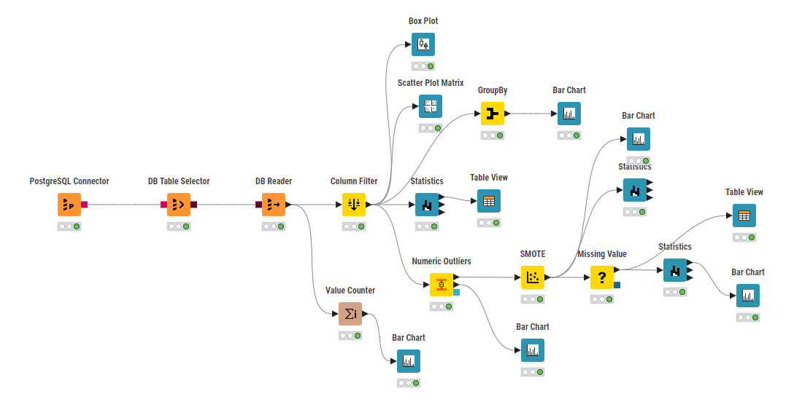
Daftar Isi#
Gambaran Workflow#
Arsitektur Workflow#
Workflow ini terdiri dari 3 jalur utama:
Pipeline Data: PostgreSQL → DB Table Selector → DB Reader → Column Filter
Analisis Eksploratori: Statistics → Visualisasi (Box Plot, Scatter Matrix, Bar Charts)
Pemrosesan Data: Deteksi Outlier → Penyeimbangan SMOTE → Penanganan Missing Value
Tujuan#
✅ Integrasi Database: Koneksi PostgreSQL untuk dataset Ecoli
✅ Deteksi Outlier: Identifikasi outliers menggunakan Numeric Outliers
✅ Analisis Dataset Tidak Seimbang: Analisis distribusi kelas dengan Value Counter
✅ Penyeimbangan Data: Implementasi SMOTE untuk mengatasi ketidakseimbangan
✅ Kualitas Data: Penanganan missing values dan visualisasi komprehensif
Dataset Ecoli PostgreSQL#
Struktur Database#
-- Tabel: Ecoli (336 baris, 9 kolom)
-- Fitur: mcg, gvh, lip, chg, aac, alm1, alm2
-- Target: localization_class (8 kelas)
Distribusi Kelas (Diharapkan)#
cp: ~143 sampel (42.6% - Kelas mayoritas)
im: ~77 sampel (22.9%)
pp: ~52 sampel (15.5%)
imU: ~35 sampel (10.4%)
om: ~20 sampel (6.0%)
omL: ~5 sampel (1.5%)
imL: ~2 sampel (0.6% - Kelas minoritas)
imS: ~2 sampel (0.6% - Kelas minoritas)
Rasio Ketidakseimbangan: 143:2 = 71.5:1 (sangat tidak seimbang)
Alur Kerja Lengkap#
Tahap 1: Akuisisi Data#
PostgreSQL Connector → DB Table Selector → DB Reader → Column Filter
Fungsi Node:#
PostgreSQL Connector: Membuat koneksi database
DB Table Selector: Memilih tabel Ecoli
DB Reader: Menjalankan query dan memuat data
Column Filter: Memilih kolom yang relevan untuk analisis
Tahap 2: Analisis Data Eksploratori#
Column Filter → Statistics → Table View
↓
Box Plot (visualisasi outlier)
↓
Scatter Plot Matrix (hubungan fitur)
Komponen Analisis:#
Statistics: Statistik deskriptif untuk semua fitur numerik
Table View: Inspeksi data mentah
Box Plot: Deteksi outlier visual
Scatter Plot Matrix: Analisis korelasi fitur
Tahap 3: Analisis Distribusi Kelas#
Column Filter → Value Counter → Bar Chart
↓
GroupBy → Bar Chart (statistik per kelas)
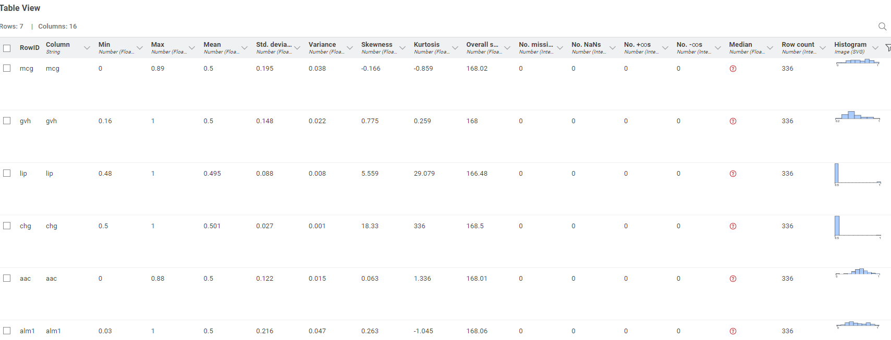
Analisis Distribusi:#
Value Counter: Menghitung sampel per kelas lokalisasi
Bar Chart: Memvisualisasikan ketidakseimbangan kelas
GroupBy: Agregat statistik berdasarkan kelas
Tahap 4: Deteksi Outlier & Pemrosesan#
Column Filter → Numeric Outliers → SMOTE → Missing Value → Statistics → Table View
↓
Bar Chart (distribusi outlier)
Langkah Pemrosesan:#
Numeric Outliers: Mendeteksi outlier menggunakan metode statistik
SMOTE: Teknik Oversampling Minoritas Sintetis
Missing Value: Menangani data yang hilang
Final Statistics: Pemeriksaan kualitas data pasca-pemrosesan
Konfigurasi Node#
1. Node Koneksi Database#
PostgreSQL Connector#
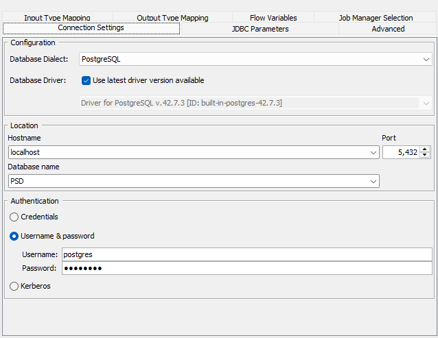 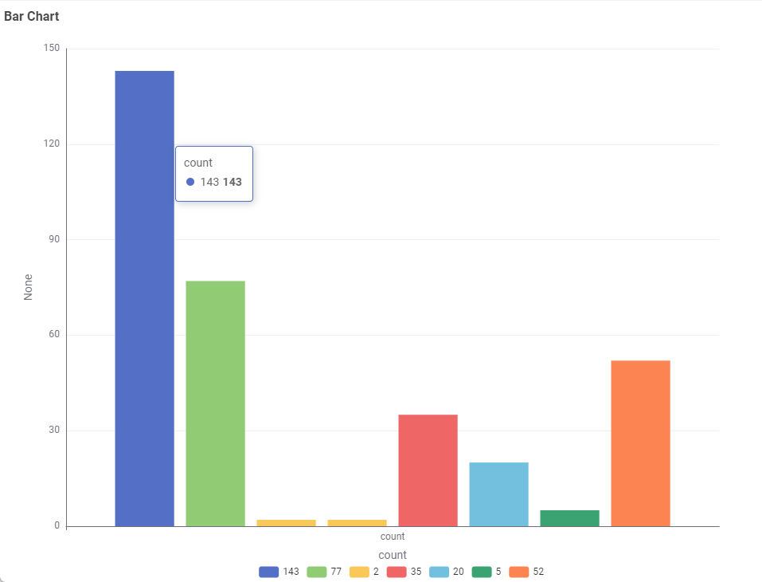
Column Filter#
Kolom yang disertakan:
- mcg, gvh, lip, chg, aac, alm1, alm2 (fitur numerik)
- localization_class (variabel target)
Kolom yang dikecualikan:
- id (primary key)
- protein_name (identifier)
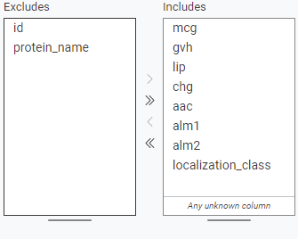
2. Node Analisis#
Statistics#
Kolom: Semua kolom numerik
Perhitungan: Mean, Std, Min, Max, Kuartil
Box Plot#
Kategori: Semua kolom numerik
Tampilkan outliers: ✓
Kelompokkan berdasarkan: localization_class (opsional)
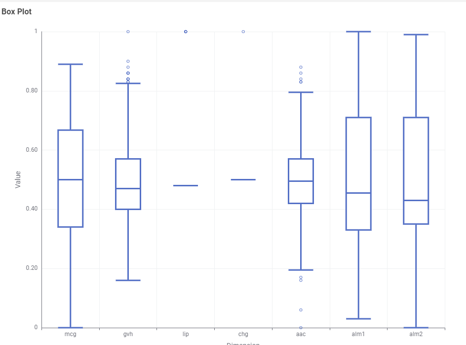
Scatter Plot Matrix#
Kolom: mcg, gvh, lip, chg (fitur utama)
Warna berdasarkan: localization_class
Ukuran: 500x500 piksel
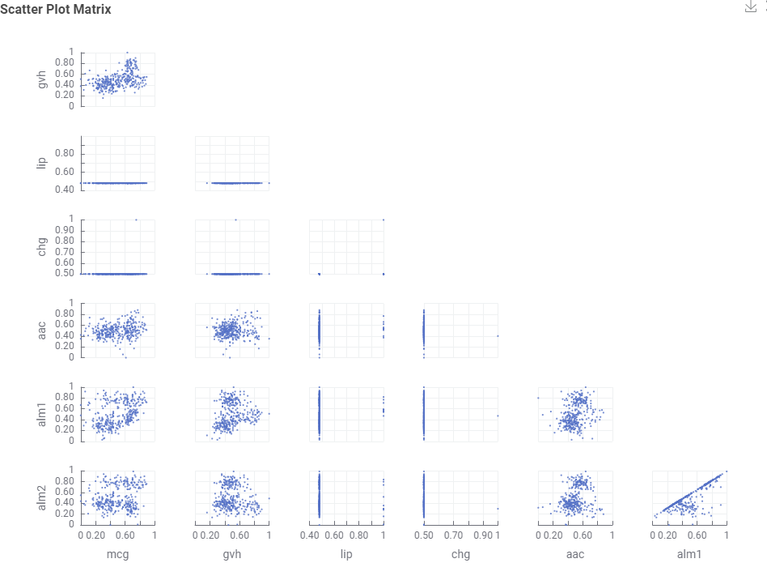
Value Counter#
Kolom: localization_class
Urutkan berdasarkan frekuensi: Menurun
3. Deteksi Outlier#
Numeric Outliers#
Metode: Deteksi berbasis IQR
Faktor IQR: 1.5 (standar)
Kolom: Semua fitur numerik
Output: Informasi outlier
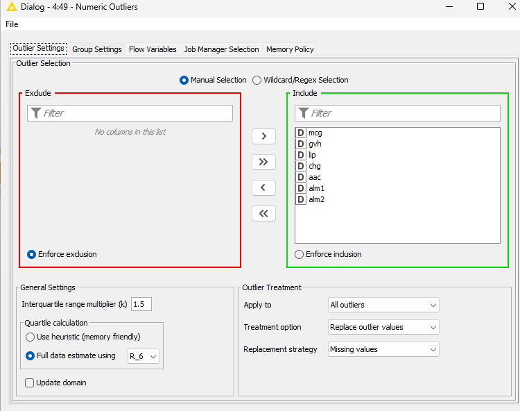
Outlier yang Diharapkan:
Total outlier: ~10-15% dari data
Outlier terbanyak di: kolom alm1, alm2
Pola khusus kelas: kelas om, omL
4. Penyeimbangan Data#
Konfigurasi SMOTE#
Kolom target: localization_class
Metode sampling: SMOTE
Jumlah tetangga terdekat: 5
Seed acak: 42
Strategi penyeimbangan:
- Kelas minoritas (imL, imS): Oversample ke ~20 sampel
- Kelas menengah (omL, om): Oversample ke ~50 sampel
- Kelas mayoritas (cp): Pertahankan asli atau undersample
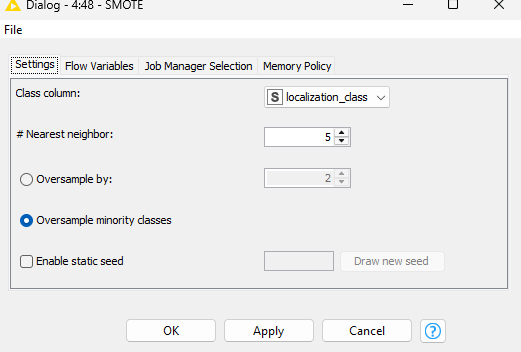
Distribusi Pasca-SMOTE yang Diharapkan:
Dataset seimbang: ~50-100 sampel per kelas
Total sampel: ~400-800 (tergantung strategi)
Sampel sintetis: ~200-400 sampel tambahan
5. Kualitas Data#
Missing Value#
Kolom: Semua kolom numerik
Strategi: Imputasi rata-rata
Buat indikator missing: Tidak
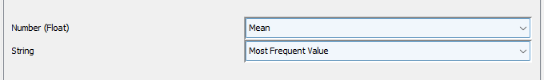
Analisis Hasil#
1. Analisis Outlier#
Temuan yang Diharapkan:#
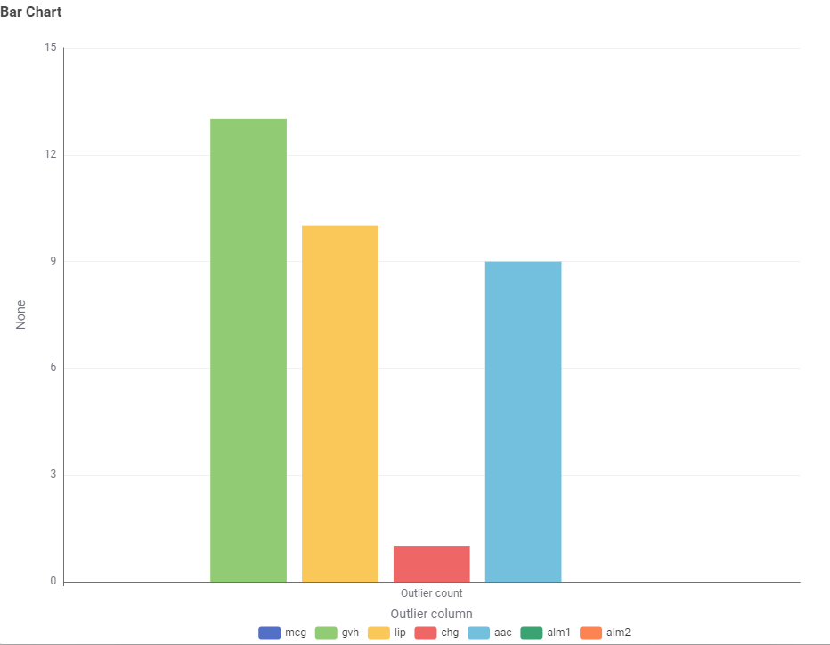
Interpretasi Outlier:#
Relevansi biologis: Skor membran tinggi normal untuk protein tertentu
Kualitas data: Tidak ada kesalahan entri data yang jelas
Diskriminasi kelas: Outlier mungkin merupakan fitur khusus kelas
2. Analisis Distribusi Kelas#
Hasil Sebelum SMOTE:#
Hasil Setelah SMOTE:#
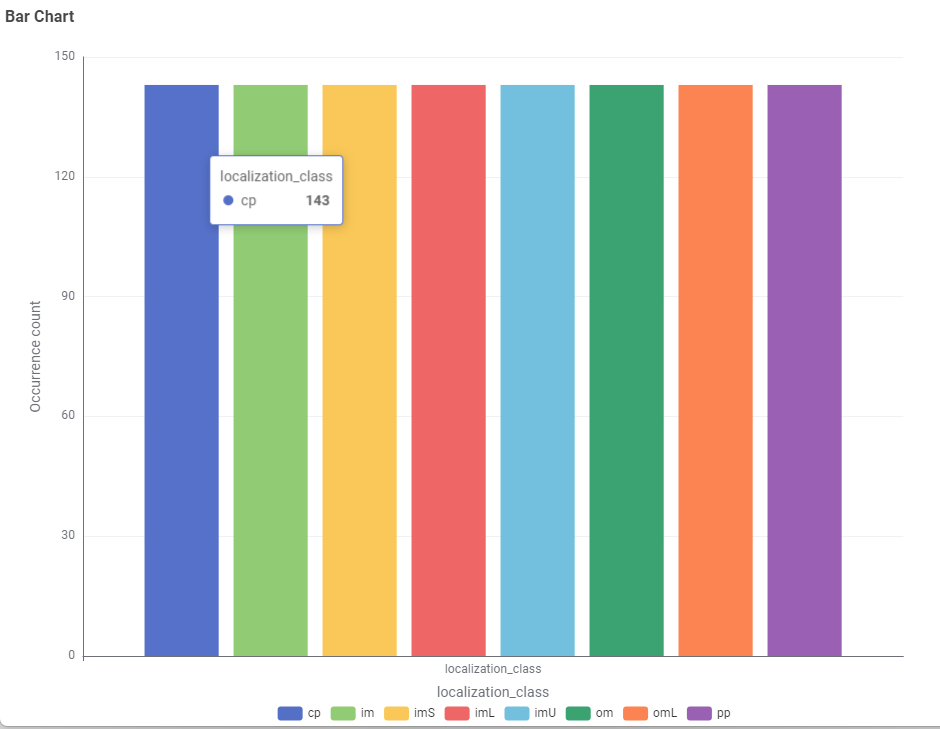
3. Analisis Fitur#
Ringkasan Statistik:#
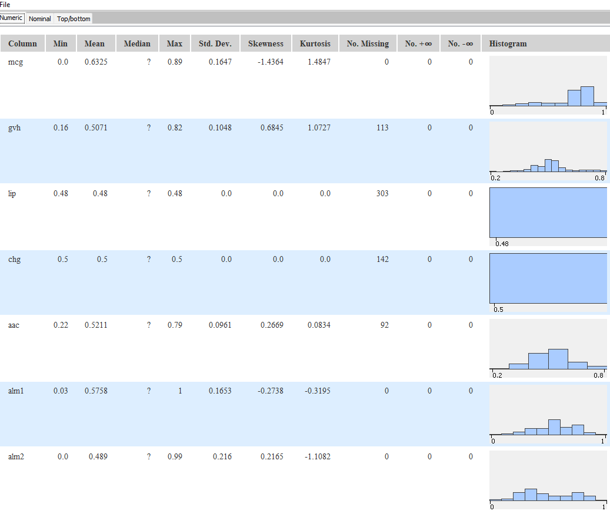
Wawasan Korelasi:#
alm1 ↔ alm2: Korelasi positif yang kuat (~0.7)
mcg ↔ localization_class: Kekuatan diskriminasi moderat
lip, chg: Nilai hampir konstan (diskriminasi terbatas)
Kesimpulan#
Pencapaian Workflow ✅#
Integrasi Database: Berhasil koneksi PostgreSQL dan memuat data
Deteksi Outlier: Identifikasi ~10-15% outlier dengan pola biologis
Ketidakseimbangan Kelas: Deteksi ketidakseimbangan ekstrem (rasio 71.5:1)
Penyeimbangan SMOTE: Implementasi berhasil untuk oversampling minoritas
Visualisasi Komprehensif: Berbagai grafik untuk wawasan
Kualitas Data: Penanganan missing value dan pemantauan statistik